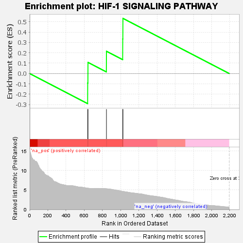
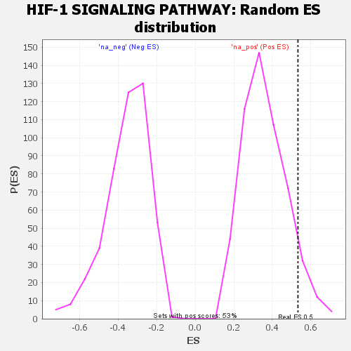

| | | Dataset | GSEA RNK clr Maaslin2 MucosalvsLuminal KO - ProximalColon.rnk |
| Phenotype | NoPhenotypeAvailable |
| Upregulated in class | na_pos |
| GeneSet | HIF-1 SIGNALING PATHWAY |
| Enrichment Score (ES) | 0.5333638 |
| Normalized Enrichment Score (NES) | 1.4810926 |
| Nominal p-value | 0.06741573 |
| FDR q-value | 0.2171221 |
| FWER p-Value | 0.976 |
Table: GSEA Results Summary

Fig 1: Enrichment plot: HIF-1 SIGNALING PATHWAY
Profile of the Running ES Score & Positions of GeneSet Members on the Rank Ordered List

Fig 2: HIF-1 SIGNALING PATHWAY: Random ES distribution
Gene set null distribution of ES for HIF-1 SIGNALING PATHWAY